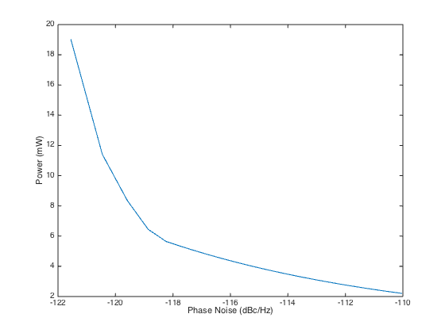

% Boyd, Kim, and Mohan, "Geometric programming and its % applications to EDA Problems", (DATE Tutorial 2005), pp.102-113. % Original code by S. Mohan % Written for CVX by Almir Mutapcic 02/08/06 % % Designs an LC oscillator consisting of a loop inductor, varactors % for fine tuning, binary weighted switching capacitors for coarse % tuning, cross coupled NMOS transistors, and tail current source. % The optimal LC oscillator design iwith minimum power consumption, % and limits on phase noise, area, etc... can be formulated as a GP: % % minimize P % s.t. N <= Nmax, A <= Amax, l >= lmin, etc. % % where optimization variables are loop inductor dimensions D,W, % size of varactor Vc, size of switching caps Csw, width and length % of transistors Wnmos, Lnmos, bias current Ibias, etc. %******************************************************************** % problem data %******************************************************************** Vdd = 1.2; % voltage CL = 0.2e-12; % load capcitance F = 5e9; % operating frequency in Hz omega = 2*pi*F; % operating freq. in radians FOff = 6e5; % offset frequency for phase noise calculation LoopGainSpec = 2.0; % loop gain spec Vbias = 0.2; % non ideality of current mirror % tuning specs T = 0.1; % +/- tuning range as a normalized value CvarRatio = 3; % maximum to minimum value of CVar CswBits = 3; CswSegs = 2^(CswBits); CvarCswLSBOverlap = 2; disp('Generating the optimal tradeoff curve...') %******************************************************************** % optimization of LC oscillator circuit (with tradeoff curve) %******************************************************************** % varying phase noise parameter for the tradeoff curve powers = []; for PNSpec=0.7e-12:0.2e-12:1e-11 fprintf(' PNSpec = %5.2f dBc/Hz: ', 10*log10(PNSpec) ); cvx_begin gp quiet % optimization variables variable D; % diameter of loop inductor variable W; % width of loop inductor variable SRF; % self resonance frequency variable l; % length of CMOS transistor variable w; % width of CMOS transistor variable Imax; % maximum current through CMOS transistor variable VOsc; % differential voltage amplitude variable CT; % total capacitance of oscillator variable Csw; % maximum switching capacitance variable Cvar; % minimum variable capacitance variable IBias; % bias current variable CMaxFreq; % capacitor max frequency % minimize power = Vdd*IBias; minimize( Vdd*IBias ) subject to %*******************************************% % loop inductor definitions and constraints % %*******************************************% SRFSpec = 3*F; omegaSRF = 2*pi*SRF; % inductance L = 2.1e-06*D^(1.28)*(W)^(-0.25)*(F)^(-0.01); % series resistance R = 0.1*D/W+3e-6*D*W^(-0.84)*F^(0.5)+5e-9*D*W^(-0.76)*F^(0.75)+0.02*D*W*F; % effective capacitance C = 1e-11*D+5e-6*D*W; % area, tank conductance, and inverse quality factor Area = (D+W)^2; G = R/(omega*L)^2; invQ = R/(omega*L); % loop constraints Area <= 0.25e-6; W <= 30e-6; 5e-6 <= W; 10*W <= D; D <= 100*W; SRFSpec <= SRF; omegaSRF^2*L*C <= 1; %****************************************% % transistor definitions and constraints % %****************************************% GM = 6e-3*(w/l)^0.6*(Imax/2)^(0.4); GD = 4e-10*(w/l)^0.4*(Imax/2)^(0.6)*1/l; Vgs = 0.34+1e-8/l+800*(Imax*l/(2*w))^0.7; Cgs = 1e-2*w*l; Cgd = 1e-9*w; Cdb = 1e-9*w; % transistor constraints 2e-6 <= w; 0.13e-6 <= l; l <= 1e-6; %***************************************************% % overall LC oscillator definitions and constraints % %***************************************************% invVOsc = (G+GD)/IBias; % phase noise kT4 = 4*1.38e-23*300; kT4G = 2*kT4; LoopCurrentNoise = kT4*G; TransistorCurrentNoise = 0.5*kT4G*GM; PN = 1/(160*(FOff*VOsc*CT)^2)*(LoopCurrentNoise+TransistorCurrentNoise); % capacitance Cfix = C+0.5*(CL+Cgs+Cdb+4*Cgd); % fixed capacitance CDiffMaxFreq = Cfix+0.5*Cvar; invLoopGain = (G+0.5*GD)/(0.5*GM); % LC oscillator constraints PN <= PNSpec; omega^2*L*CT == 1; omega^2*(1+T)^2*L*CMaxFreq == 1; 4*T/((1-T^2)^2)*CT <= Csw*(1+CvarCswLSBOverlap/CswSegs); Csw*CvarCswLSBOverlap/CswSegs <= 0.5*Cvar*(CvarRatio-1); CDiffMaxFreq <= CMaxFreq; VOsc+2*Vbias <= 2*Vdd; VOsc*invVOsc <= 1; invLoopGain*LoopGainSpec <= 1; % loop gain spec Vbias+Vgs+IBias/2*R/2 <= Vdd; % bias constraint spec Imax == IBias; cvx_end fprintf('min_power = %3.2f mW\n', cvx_optval/1e-3); powers = [powers cvx_optval]; end % plot the tradeoff curve PNSpec = 0.7e-12:0.2e-12:1e-11; plot(10*log10(PNSpec),powers/1e-3); xlabel('Phase Noise (dBc/Hz)') ylabel('Power (mW)') disp('Optimal tradeoff curve plotted.')
Generating the optimal tradeoff curve... PNSpec = -121.55 dBc/Hz: min_power = 19.00 mW PNSpec = -120.46 dBc/Hz: min_power = 11.41 mW PNSpec = -119.59 dBc/Hz: min_power = 8.35 mW PNSpec = -118.86 dBc/Hz: min_power = 6.44 mW PNSpec = -118.24 dBc/Hz: min_power = 5.64 mW PNSpec = -117.70 dBc/Hz: min_power = 5.30 mW PNSpec = -117.21 dBc/Hz: min_power = 5.02 mW PNSpec = -116.78 dBc/Hz: min_power = 4.77 mW PNSpec = -116.38 dBc/Hz: min_power = 4.56 mW PNSpec = -116.02 dBc/Hz: min_power = 4.38 mW PNSpec = -115.69 dBc/Hz: min_power = 4.21 mW PNSpec = -115.38 dBc/Hz: min_power = 4.07 mW PNSpec = -115.09 dBc/Hz: min_power = 3.93 mW PNSpec = -114.81 dBc/Hz: min_power = 3.81 mW PNSpec = -114.56 dBc/Hz: min_power = 3.70 mW PNSpec = -114.32 dBc/Hz: min_power = 3.60 mW PNSpec = -114.09 dBc/Hz: min_power = 3.51 mW PNSpec = -113.87 dBc/Hz: min_power = 3.42 mW PNSpec = -113.67 dBc/Hz: min_power = 3.34 mW PNSpec = -113.47 dBc/Hz: min_power = 3.27 mW PNSpec = -113.28 dBc/Hz: min_power = 3.20 mW PNSpec = -113.10 dBc/Hz: min_power = 3.13 mW PNSpec = -112.92 dBc/Hz: min_power = 3.07 mW PNSpec = -112.76 dBc/Hz: min_power = 3.01 mW PNSpec = -112.60 dBc/Hz: min_power = 2.96 mW PNSpec = -112.44 dBc/Hz: min_power = 2.91 mW PNSpec = -112.29 dBc/Hz: min_power = 2.86 mW PNSpec = -112.15 dBc/Hz: min_power = 2.81 mW PNSpec = -112.01 dBc/Hz: min_power = 2.77 mW PNSpec = -111.87 dBc/Hz: min_power = 2.72 mW PNSpec = -111.74 dBc/Hz: min_power = 2.68 mW PNSpec = -111.61 dBc/Hz: min_power = 2.64 mW PNSpec = -111.49 dBc/Hz: min_power = 2.61 mW PNSpec = -111.37 dBc/Hz: min_power = 2.57 mW PNSpec = -111.25 dBc/Hz: min_power = 2.54 mW PNSpec = -111.14 dBc/Hz: min_power = 2.50 mW PNSpec = -111.02 dBc/Hz: min_power = 2.47 mW PNSpec = -110.92 dBc/Hz: min_power = 2.44 mW PNSpec = -110.81 dBc/Hz: min_power = 2.41 mW PNSpec = -110.71 dBc/Hz: min_power = 2.38 mW PNSpec = -110.60 dBc/Hz: min_power = 2.36 mW PNSpec = -110.51 dBc/Hz: min_power = 2.33 mW PNSpec = -110.41 dBc/Hz: min_power = 2.31 mW PNSpec = -110.32 dBc/Hz: min_power = 2.28 mW PNSpec = -110.22 dBc/Hz: min_power = 2.26 mW PNSpec = -110.13 dBc/Hz: min_power = 2.23 mW PNSpec = -110.04 dBc/Hz: min_power = 2.21 mW Optimal tradeoff curve plotted.
